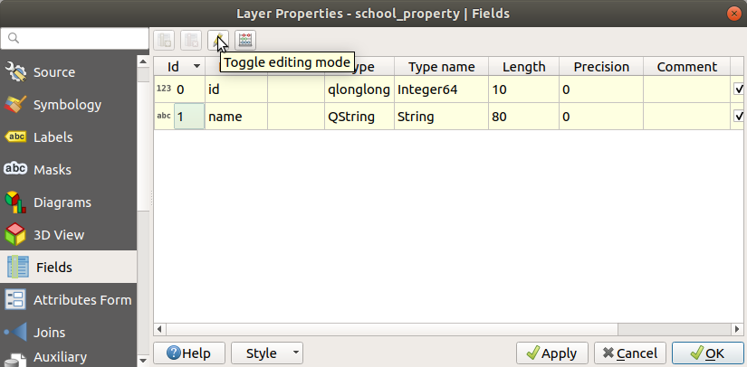
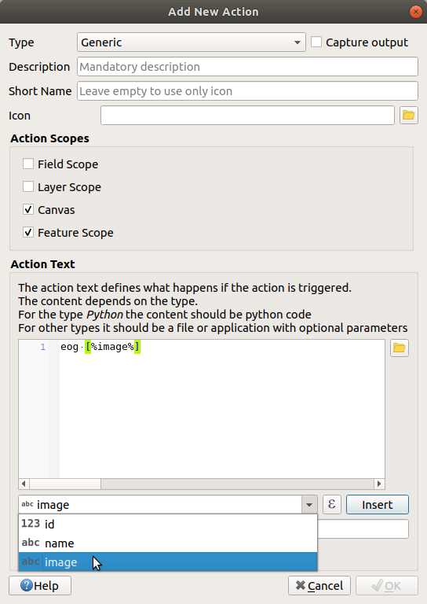
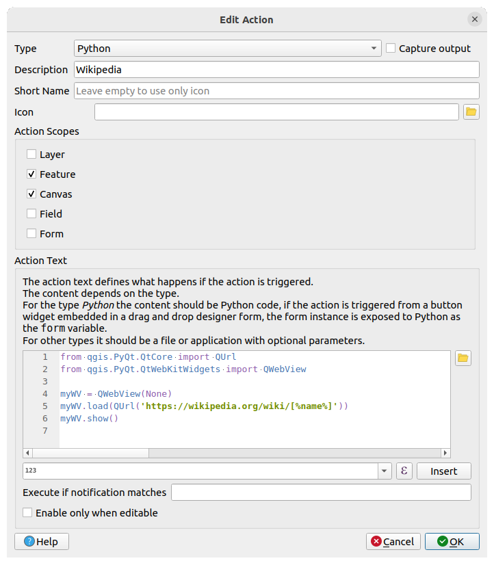

重要
翻訳は あなたが参加できる コミュニティの取り組みです。このページは現在 100.00% 翻訳されています。
5.4. レッスン: アクション
前のレッスンで既定のアクションを見たので、今度は自分のアクションを定義してみましょう。
アクションとは、地物をクリックしたときに発生するものです。アクションは、例えば、オブジェクトに関する追加情報を取得するなど、地図に多くの機能を追加することができます。アクションを割り当てることで、地図にまったく新しい次元を追加することができます！
このレッスンの目標: カスタムアクションを追加する方法を学びます。
このレッスンでは、以前に作成した school_property レイヤを使用します。サンプルデータには、あなたがデジタイズした3つの物件それぞれの写真が含まれています。これから行うのは、各物件とその画像を関連付けることです。そして、プロパティをクリックすると、その物件の画像が開かれるようなアクションを作成します。
5.4.1. ★☆☆ （初級レベル） 理解しよう: 画像のためのフィールドを追加
school_property レイヤには、まだ画像と物件を関連付ける方法がありません。まず、この目的のためにフィールドを作成します。
レイヤプロパティ ダイアログを開きます。
属性 タブをクリックします。
編集モードに切り替えます:
 新しい列を追加します:
下記の値を入力します:

フィールドが作成されたら、 属性フォーム タブに移動して、
imageフィールドを選択します。ウィジェットタイプ を アタッチメント に設定します：

レイヤプロパティ ダイアログで OK をクリックします。
地物情報表示 ツールを使用して school_property レイヤにある3つの地物のいずれかをクリックします。
編集モードのままなので、ダイアログがアクティブになり、次のように表示されるはずです：

参照ボタンをクリックします (image フィールドの横の ...)。
画像のパスを選択します。画像は
exercise_data/school_property_photos/にあり、関連付けるべき地物と同じ名前になっています。OK をクリックします。
この方法ですべての画像と地物を正しく関連付けます。
編集内容を保存し、編集モードを終了します。
5.4.2. ★☆☆ （初級レベル） 理解しよう: アクションを作る
school_property レイヤの アクション タブを開き、
 :sup:`アクションを追加`ボタンをクリックします。
:sup:`アクションを追加`ボタンをクリックします。
新規アクションを追加 ダイアログで、 説明 フィールドに
Show Imageという文字を入力します:
次に何をすべきかはオペレーティングシステムによって異なりますので、次で適切なコースを選択して下さい:
Windows
データ型 ドロップダウンリストをクリックし、 URLを開く を選択します。
Ubuntu Linux
アクション の下で、 Gnome Image Viewer 用に
eogを記入するか、ImageMagick を使うためにdisplayを記入します。コマンドの後ろに空白をひとつ入れることを忘れないでください！macOS
データ型 ドロップダウンリストをクリックし、 Mac を選択します。
アクション の下に
openを記入します。コマンドの後ろに空白をひとつ入れることを忘れないでください！
これで、コマンドを書き続けることができます。
あなたは画像を開きたい。そしてQGISは画像の場所を知っています。あとは アクション に画像がどこにあるかを知らせるだけです。
リストから image を選択します:
 挿入 ボタンをクリックします。QGISは アクションテキスト フィールドに
[% "image" %]という語句を追加します。OK ボタンをクリックして 新規アクションを追加 ダイアログを閉じます
OK をクリックして、 レイヤプロパティ ダイアログを閉じます
では新しいアクションを試してみましょう：
レイヤ パネルで school_property レイヤをクリックし、ハイライトさせます。
（属性ツールバー にある）
 地物アクションの実行 ボタンを見つけます。
地物アクションの実行 ボタンを見つけます。このボタンの右側にある下向き矢印をクリックします。このレイヤには、今のところ、作ったばかりのアクション1つだけが定義されています。

ボタン自体をクリックしてツールをアクティブにします。
このツールを使用して、3つの地所のいずれかをクリックします。
その物件の画像が開くはずです。
5.4.3. ★★☆ （中級レベル） 理解しよう: インターネットを検索する
地図を見ていて、ある農場のある地域についてもっと知りたいとします。その地域について何も知らないあなたが、その地域についての一般的な情報を見つけたいとします。今、パソコンを使っていることを考えると、まず最初にその地域の名前をGoogleで検索するのではないでしょうか。そこで、QGISに自動で検索させることにしましょう！
landuse レイヤーの属性テーブルを開きます。
Googleの検索には、土地利用分野ごとに
nameフィールドを使用する予定です。属性テーブルを閉じます。
レイヤープロパティ の アクション に戻ります。
デフォルトアクションを作成 ボタンをクリックして、あらかじめ定義されたいくつかのアクションを追加します。
下の
 選択中のアクションを削除 ボタンを使って、短いタイトルが 検索ウェブ の URLを開く アクションを除く、すべてのアクションを削除します。
選択中のアクションを削除 ボタンを使って、短いタイトルが 検索ウェブ の URLを開く アクションを除く、すべてのアクションを削除します。残っているアクションをダブルクリックして編集します
説明 を
Google Searchに変更し、 短い名前 フィールドの内容を削除してください。スコープ で キャンバス がチェックされていることを確かめてください。
次に何をすべきかはオペレーティングシステムによって異なりますので、次で適切なコースを選択して下さい:
Windows
タイプ で 開く を選択します。これはWindowsにInternet Explorer等の既定のブラウザでインターネットアドレスを開かせます。
Ubuntu Linux
アクション の下に、
xdg-openと記述します。これは、Ubuntuに、ChromeやFirefoxなどの既定のブラウザでインターネットアドレスを開くように指示します。macOS
アクション の下に
openと記述します。これは、macOSに、Safariなどの既定のブラウザでインターネットアドレスを開くように指示しします。
これで、コマンドを書き続けることができます
上でどのコマンドを使った場合でも次に、開くべきインターネットアドレスを知らせなければいけません。Googleを訪問させて語句を自動的に検索させます。
通常、Googleを使うときは、Googleの検索バーに検索フレーズを入力します。しかし今回の場合、コンピュータにこれをやってもらいたいのです。Googleに検索を指示する方法（検索バーを直接使いたくない場合）は、インターネットブラウザに
https://www.google.com/search?q=SEARCH_PHRASEというアドレスを与えます。SEARCH_PHRASEは検索したいものです。ここでは、まだ検索するフレーズがわからないので、最初の部分（searchフレーズなし）だけを入力します。アクション フィールドに、
https://www.google.com/search?q=と記述してください。これを書き込む前に、最初のコマンドの後にスペースを追加することを忘れないでください!次にQGISがブラウザに、クリックした地物の
nameの値を検索するようにGoogleに指示するようにします。name フィールドを選択します。
Insert ボタンをクリックします:

これが意味するところは、QGISがブラウザを開いて、アドレス
https://www.google.com/search?q=[% "name" %]に送信するということです。[% "name" %]は、検索するフレーズとしてnameフィールドの内容を使用するようにQGISに指示します。例えば、クリックした土地利用区域の名前が
Marloth Nature Reserveであった場合、QGIS はhttps://www.google.com/search?q=Marloth%20Nature%20Reserveをブラウザに送信し、ブラウザは Google にアクセスし、Google は "Marloth Nature Reserve" を検索することになります。まだの方は、上記で説明したようにすべて設定してください。
OK ボタンをクリックして 新規アクションを追加 ダイアログを閉じます
OK をクリックして、 レイヤプロパティ ダイアログを閉じます
では新しいアクションをためします。
レイヤ パネルで landuse レイヤをアクティブにして、
地物アクションの実行 ボタンの右にある下矢印をクリックし、このレイヤーに定義されている唯一のアクション (Google Search) を選択します。地図上に表示されている土地利用区域のどれかをクリックしてください。ブラウザが起動し、そのエリアの
name値として記録されている場所をGoogleで検索し始めます。
注釈
アクションがうまく動作しない場合は、すべてが正しく入力されたことをチェックしてください。タイプミスはこの種の作業でよくあることです!
5.4.4. ★★★ （上級レベル） 理解しよう: QGISで直接Webページを開く
上記では、外部ブラウザでウェブページを開く方法について見てきました。この方法には、エンドユーザーが自分のシステムでそのアクションを実行するために必要なソフトウェアを持っているかどうかという、未知の依存関係を追加してしまうという欠点があります。エンドユーザーがどのOSを使っているかわからない場合、同じ種類のアクションのための同じ種類の基本コマンドを持っているとは限らないことは、ご覧のとおりです。OSのバージョンによっては、上記のブラウザを開くためのコマンドが全く動作しないこともあります。これは、どうしようもない問題かもしれません。
しかし、QGISは、信じられないほど強力で多用途なQtライブラリの上に乗っています。また、QGISのアクションは、任意のトークン化された（つまり、フィールド属性の内容に基づいた変数情報を使用した）Pythonコマンドを使用することができます！
Pythonアクションを使用してWebページを表示する方法を説明します。これは外部ブラウザでサイトを開くのと同じ一般的なアイデアですが、Qt QWebViewクラス（webkitベースのhtmlウィジェットです）を使ってポップアップウィンドウにコンテンツを表示するので、ユーザーのシステム上にブラウザは必要ありません。
今回はWikipediaを使ってみましょう。つまり、要求されたURLは次のようになります:
https://wikipedia.org/wiki/SEARCH_PHRASE
レイヤアクションを作成するには:
レイヤプロパティ ダイアログを開いて アクション タブに移動します。
次のアクションのプロパティを使って新しいアクションを設定します。
型:
Python説明:
Wikipediaスコープ:
地物,キャンバスアクションテキスト:
from qgis.PyQt.QtCore import QUrl from qgis.PyQt.QtWebKitWidgets import QWebView myWV = QWebView(None) myWV.load(QUrl('https://wikipedia.org/wiki/[%name%]')) myWV.show()
 ここでは:
アクションが呼び出されると、
[%name%]は実際の属性値に置き換えられます (以前と同様です)。このコードでは、単に新しい
QWebViewインスタンスを作成してその URL を設定し、show()を呼び出してユーザーのデスクトップにウィンドウとして表示させるだけです。
また、この方法を使えば、ユーザーが特定の画像ビューアーをシステム上に持っていることを要求せずに、画像を表示することができます。
先程作成したWikipediaアクションを使って、上記の方法でWikipediaのページを読み込んでみてください。
5.4.5. 結論
アクションを使うと、QGISで同じマップを表示するエンドユーザーにとって便利な追加機能をマップに付与することができます。呼び出されるプロセスは、Pythonだけでなく、あらゆるオペレーティングシステムのシェルコマンドにすることができるため、組み込むことができる機能は無限大です！
5.4.6. 次は?
さて、あらゆる種類のベクトルデータの作成を行ったので、問題を解決するためにデータを分析する方法を学びます。それが次のモジュールのテーマです。